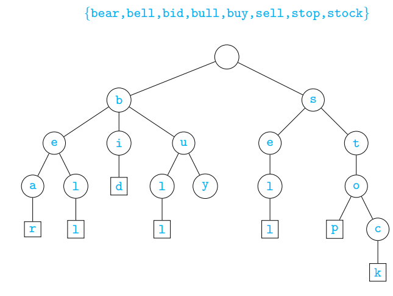
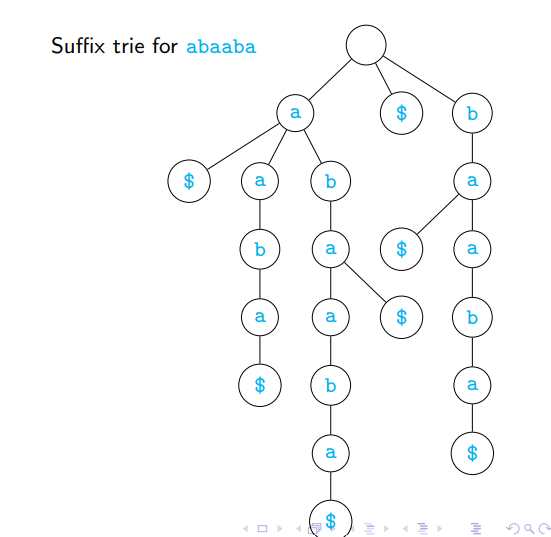

Home Week-9 Week-11
PDSA - Week 10
PDSA - Week 10String matchingBrute force approachBoyer-Moore AlgorithmRabin-Karp AlgorithmKnuth-Morris-Pratt algorithmTriesRegular expression
String matching
Searching for a pattern is a fundamental problem when dealing with text
- Editing a document
- Answering an internet search query
- Looking for a match in a gene sequence
Example
anoccurs inbananaat two positions
Formally
- A text string
tof lengthnA pattern stringpof lengthm - Both
tandpare drawn from an alphabet of valid letters, denotedΣ - Find every position
iin t such thatt[i:i+m] == p
Brute force approach
Nested scan from left to right in t
1def stringmatch(t,p):2 poslist = []3 for i in range(len(t)-len(p)+1):4 matched = True5 j = 06 while j < len(p) and matched:7 if t[i+j] != p[j]:8 matched = False9 j = j+110 if matched:11 poslist.append(i)12 return(poslist)13print(stringmatch('abababbababbbbababab','abab'))Output
xxxxxxxxxx11[0, 2, 7, 14, 16]Complexity
Nested scan from right to left
xxxxxxxxxx131def stringmatchrev(t,p):2 poslist = []3 for i in range(len(t)-len(p)+1):4 matched = True5 j = len(p)-16 while j >= 0 and matched:7 if t[i+j] != p[j]:8 matched = False9 j = j-110 if matched:11 poslist.append(i)12 return(poslist)13print(stringmatchrev('abababbababbbbababab','abab'))Output
xxxxxxxxxx11[0, 2, 7, 14, 16]
Complexity
Speeding up the brute force algorithm
Text
t, patternpof of lengthsn,mFor each starting position
iint, comparet[i:i+m]withp- Scan
t[i:i+m]right to left
- Scan
While matching, we find a letter in
tthat does not appear inpt = bananamania,p = bulk
Shift the next scan to position after mismatched letter
What if the mismatched letter does appear in
p?
Boyer-Moore Algorithm
Algorithm
Initialize
last[c]for eachcinp- Single scan, rightmost value is recorded
Nested loop, compare each segment
t[i:i+len(p)]withpIf
pmatches, record and shift by1We find a mismatch at
t[i+j]If
j > last[t[i+j]], shift byj - last[t[i+j]]If
last[t[i+j]] > j, shift by1- Should not shift
pto left!
- Should not shift
If
t[i+j]not inp, shift byj+1
Implementation
xxxxxxxxxx231def boyermoore(t,p):2 last = {} # Preprocess3 for i in range(len(p)):4 last[p[i]] = i5 poslist=[]6 i = 07 while i <= (len(t)-len(p)):8 matched,j = True,len(p)-19 while j >= 0 and matched:10 if t[i+j] != p[j]:11 matched = False12 j = j - 113 if matched:14 poslist.append(i)15 i = i + 116 else:17 j = j + 118 if t[i+j] in last.keys():19 i = i + max(j-last[t[i+j]],1)20 else:21 i = i + j + 122 return(poslist)23print(boyermoore('abcaaacabc','abc'))Output
xxxxxxxxxx11[0, 7]
Complexity
Worst case remains
If t = aaa...a, p = baaa
Rabin-Karp Algorithm
- Suppose Σ = {0, 1, . . . , 9}
- Any string over Σ can be thought of as a number in base 10
- Pattern
- Each substring of length
- Scan
Implementation
xxxxxxxxxx151def rabinkarp(t,p):2 poslist = []3 numt,nump = 0,04 for i in range(len(p)):5 numt = 10*numt + int(t[i])6 nump = 10*nump + int(p[i])7 if numt == nump:8 poslist.append(0)9 for i in range(1,len(t)-len(p)+1):10 numt = numt - int(t[i-1])*(10**(len(p)-1))11 numt = 10*numt + int(t[i+len(p)-1])12 if numt == nump:13 poslist.append(i)14 return(poslist)15print(rabinkarp('233323233454323','23'))Output
xxxxxxxxxx11[0, 4, 6, 13]
Analysis
Preprocessing time is
- To convert
t[0:m],pto numbers
- To convert
Worst case for general alphabets is
- Every block
t[i:i+m]may have same remainder moduloqas the patternp - Must validate each block explicitly, like brute force
- Every block
In practice number of spurious matches will be small
If |Σ| is small enough to not require modulo arithmetic, overall time is
- Also if we can choose
qcarefully to ensure
- Also if we can choose
Rabin Karp Implementation for strings
311def rabin_karp(text, pattern):2 match_found =[]3 n = len(text)4 m = len(pattern) 5 # Prime number to use for the hash function6 prime = 101 7 # Calculate the hash value of the pattern8 pattern_hash = 09 for i in range(m):10 pattern_hash += ord(pattern[i])11 pattern_hash = pattern_hash % prime12 13 # Calculate the hash value of the first substring of the text14 text_hash = 015 for i in range(m):16 text_hash += ord(text[i])17 text_hash = text_hash % prime18 # Iterate through the text, checking for matches with the pattern19 for i in range(n - m + 1):20 # Check if the current substring matches the pattern21 if text_hash == pattern_hash and text[i:i+m] == pattern:22 match_found.append(i) 23 # Calculate the hash value of the next substring24 if i < n - m:25 text_hash = (text_hash - ord(text[i]) + ord(text[i+m]))26 text_hash = text_hash % prime27 # No match found28 return match_found29text = 'abcdbabcdb'30pattern = 'abcdb'31print(rabin_karp(text, pattern))Output
xxxxxxxxxx13111[0, 5]
Knuth-Morris-Pratt algorithm
Compute the automaton for
pefficientlyMatch
pagainst itselfmatch[j] = kif suffix ofp[:j+1]matches prefixp[:k]
Suppose suffix of
p[:j+1]matches prefixp[:k]- If
p[j+1]==p[k], extend the match - Otherwise try to find a shorter prefix that can be extended by
p[j+1]
- If
Usually refer to match as failure function fail
- Where to fall back if match fails
Computing the fail function
Initialize
fail[j] = 0for alljkkeeps track of length of current matchjis next position to update failIf
p[j] == p[k]extend the match, setfail[j] = k+1If
p[j] != p[k]find a shorter prefix that matches suffix ofp[:j]- Step back to
fail[k-1]
- Step back to
If we don’t find a nontrivial prefix to extend, retain
fail[j] = 0, move to next position
Implementation of fail function
xxxxxxxxxx141def kmp_fail(p):2 m = len(p)3 fail = [0 for i in range(m)]4 j,k = 1,05 while j < m:6 if p[j] == p[k]:7 fail[j] = k+18 j,k = j+1,k+19 elif k > 0:10 k = fail[k-1]11 else:12 j = j+113 return(fail)14print(kmp_fail('abcaabca'))Output
xxxxxxxxxx11[0, 0, 0, 1, 1, 2, 3, 4]
Complexity
Implementation of KMP algorithm
- Scan
tfrom beginning jis next position intkis currently matched position inp- If
t[j] == p[k]extend the match - If
t[j] != p[k], update match prefix - If we reach the end of the while loop, no match
x1def kmp_fail(p):2 m = len(p)3 fail = [0 for i in range(m)]4 j,k = 1,05 while j < m:6 if p[j] == p[k]:7 fail[j] = k+18 j,k = j+1,k+19 elif k > 0:10 k = fail[k-1]11 else:12 j = j+113 return(fail)14
15def find_kmp(t, p):16 match =[]17 n,m = len(t),len(p)18 if m == 0:19 match.append(0)20 fail = kmp_fail(p)21 j = 022 k = 023 while j < n:24 if t[j] == p[k]:25 if k == m - 1:26 match.append(j - m + 1)27 k = 028 j = j - m + 229 else:30 j,k = j+1,k+131 elif k > 0:32 k = fail[k-1]33 else:34 j = j+135 return(match)36print(find_kmp('ababaabbaba','aba'))Output
xxxxxxxxxx11[0, 2, 8]Analysis
- The Knuth, Morris, Pratt algorithm efficiently computes the automaton describing prefix matches in the pattern
p - Complexity of preprocessing the fail function is
- After preprocessing, can check matches in the text t in
- Overall, KMP algorithm works in time
Tries
A trie is a special kind of tree
- From “information retrieval”
- Pronounced try, distinguish from tree
Rooted tree
- Other than root, each node labelled by a letter from Σ
- Children of a node have distinct labels
Each maximal path is a word
- One word should not be a prefix of another
- Add special end of word symbol
$

Build a trie
Tfrom a set of wordsSwithswords andntotal symbolsTo search for a word
w, follow its path- If the node we reach has
$as a successor represent wis a prefix of some
- If the node we reach has
Build a trie
Tfrom a set of wordsSwithswords andntotal symbolsBasic properties for T built from S
- Height of
Tis - A node has at most |Σ| children
- The number of leaves in
Tiss - The number of nodes in
Tisn + 1, plus s nodes labelled$
- Height of
Implementation of Tries
xxxxxxxxxx311class Trie:2 def __init__(self,S=[]):3 self.root = {}4 for s in S:5 self.add(s)6 def add(self,s):7 curr = self.root8 s = s + "$"9 for c in s:10 if c not in curr.keys():11 curr[c] = {}12 curr = curr[c]13 def query(self,s):14 curr = self.root15 for c in s:16 if c not in curr.keys():17 return(False)18 curr = curr[c]19 if "$" in curr.keys():20 return(True)21 else:22 return(False)23 24T = Trie()25T.add('car')26T.add('card')27T.add('care')28T.add('dog')29T.add('done')30print(T.query('dog'))31print(T.query('cat'))Output
xxxxxxxxxx21True2False
Analysis
- Tries are useful to preprocess fixed text for multiple searches
- Searching for
pis proportional to length ofp - Main drawback of a trie is size
Suffix Tries
Expand
Sto include all suffixes- For simplicity, assume
S = {s} suffix(S) = {w | ∃v, vw = s}
- For simplicity, assume
Build a trie for
suffix(S)- Use
$to mark end of word - Suffix trie for
S
- Use
Using a suffix trie we can answer the following
- Is
wa substring ofs? - How many times does
woccur as a substring ins? - What is the longest repeated substring in
s?
- Is

Implementation of suffix tries
xxxxxxxxxx241class SuffixTrie:2 def __init__(self,s):3 self.root = {}4 s = s + "$"5 for i in range(len(s)):6 curr = self.root7 for c in s[i:]:8 if c not in curr.keys():9 curr[c] = {}10 curr = curr[c]11 def followPath(self,s):12 curr = self.root13 for c in s:14 if c not in curr.keys():15 return(None)16 curr = curr[c]17 return(curr)18 def hasSuffix(self,s):19 node = self.followPath(s)20 return(node is not None and "$" in node.keys())21ST = SuffixTrie('card')22print(ST.root)23print(ST.followPath('a'))24print(ST.hasSuffix('aa'))Output
xxxxxxxxxx21{'r': {'d': {'$': {}}}}2False
Regular expression
use lecture's slides